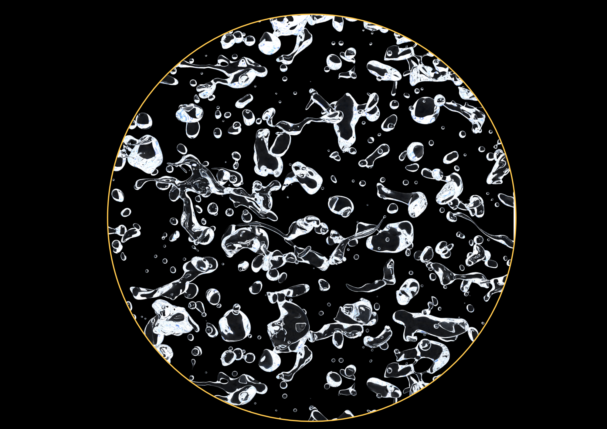
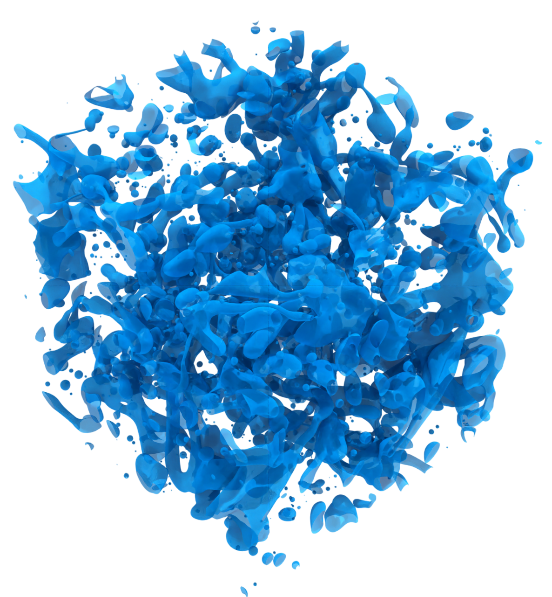
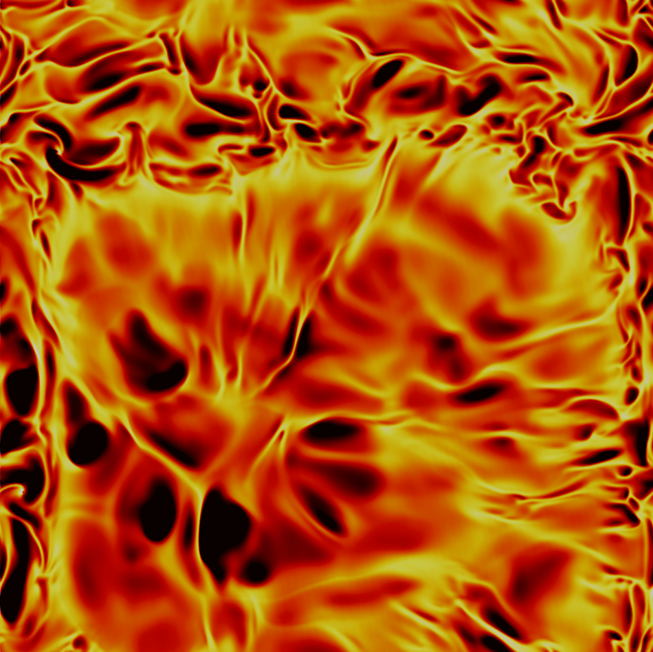
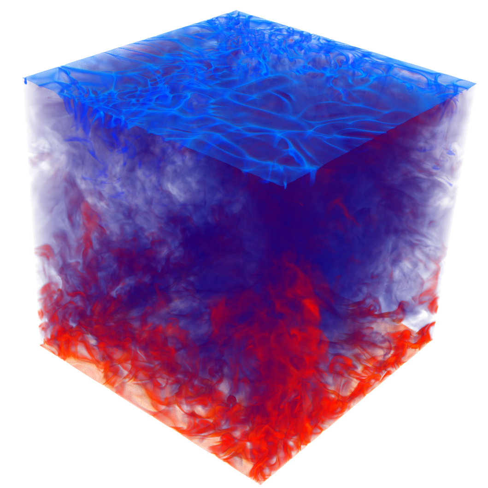
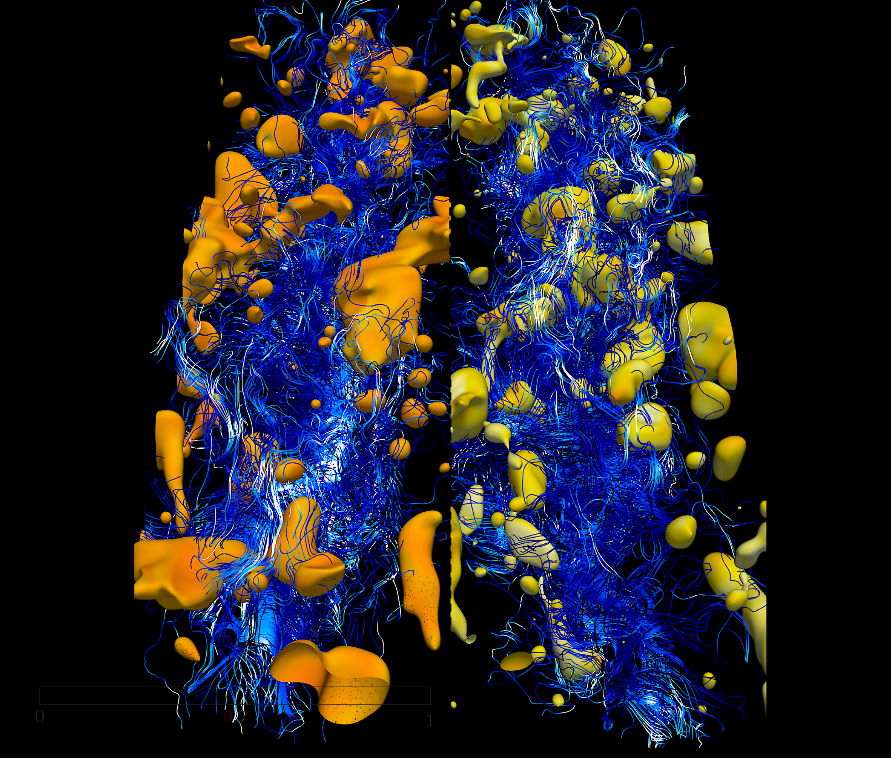
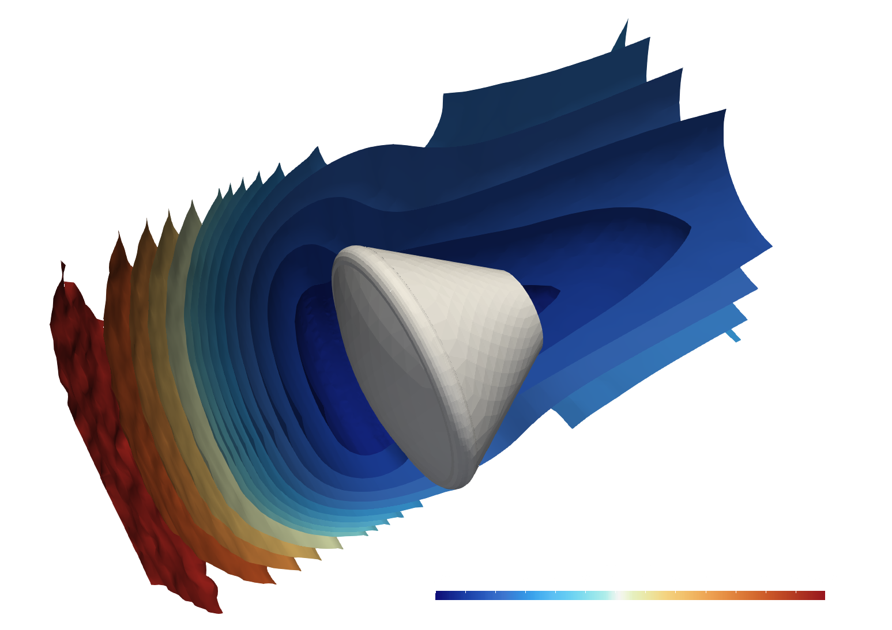

Scientific Visualization (SciVis)
- Dancing drops in homogeneous isotropic turbulence (FEDSM Flow Vis Award 2026, 3rd place)
- Surfactant-laden drops in turbulence (Art & Science Award @ WCCM-ECCOMAS)

- Drops in homogeneous isotropic turbulence

- Convectice cells in Rayleigh-Bénard convection at Ra=1010

- Rayleigh-Bénard convection at Ra=1010

- Drops in turbulence laden with lipophlic (left) and hydrophilic (right) surfactants

- Rientry of Orion capsule (105km, Ma=25, no reactions) - dscmFoam+ (hyStrath)
